View modes — Forum, Clip, Gram: a dropdown in the top bar, the reel, and the people behind it
Five proposals, twenty-two frames, every one a capture of the engine (MOCKS.md P1). Current is
main at c3a4abe; Proposed is claude/clips-followups at d311652 — v6 fixes the two device findings (the count line on a chip, the
clip looping); v5 moved the
control: a dropdown in the top bar (D7, decided on v4), the reel's own exit gone with it. v4 built the whole scope: the
people-scope reel (D1), autoplay (D3), the veil, GIFs and alt text in Gram (D9, D10). Both captured by scripts/mock-snaps.mjs against the same
hermetic population, in the default skin, at 390×844 and 1280×900. The population (e2e/harness/mock-reel.mjs) is the
board fixture plus what a reel is judged under: three clips at three shapes — a portrait, a landscape, a square with alt text a
person wrote and the longest words on the board — beside the board's single picture and its four-picture post, so clip mode has to
frame three aspect ratios and gram mode a carousel; the text posts, link cards, the reply and the repost are what the kind filter
must drop. Signed in as the test session. Every claim a frame makes is held by e2e/view-modes.workflow.mjs.
Open decisions
- D7 — where the control lives. Decided on v4 (owner, 2026-09-21: "not really a gradient … it's basically a content type filter and formatting and it's one at a time and not really graduated like mutuals to world, maybe a drop down in the top bar even?"). Built (v5): a dropdown in the top bar, Forum · Clip · Gram, the sort bar's own select dressing, on every board — one press on a phone, always on screen over a reel, so the reel's own exit is gone. The ring pill stays alone in the nav: it is a gradient, and a segmented control says so; this is a kind, one at a time, and a select says that.
- D8 — the word in code. Built as proposed: readers see Forum · Clip · Gram; the code and the key say
view(forage.view,js/view-mode.js), becausejs/mode.jsalready means which population the app is. - D3 — autoplay. Built as proposed (v4). In Clip mode the frame on screen mounts a muted player by itself — a new switch on the account page, following the device's "reduce motion" until chosen; a labeled frame is veiled and never plays; nothing mounts before the session has settled; with the switch off, nothing is downloaded until a press.
- D1 — where clips come from at a people-scope. Built as (a) (v4). At Me / Mutuals / Follows / +1 on a board the ring scopes, the reel is the scope's people: each is asked for their clips (or pictures) with the network's own filter, eight at a time, the next eight only when the reader reaches the end. The count line names the source. Measured (plan, Phase 0): a wave of eight is under a second at Follows and yields dozens of frames; +1 is ~262,000 edges for a 46-mutual account and needs its own cap with words — a follow-up, not built.
- D11 — a default. Decided and built (v5) (owner, 2026-09-21: "add a 'default' setting for it in the user settings and have it be 'forum' by default"). Default view on the account page, Forum unless chosen, is what a fresh visit opens in; the top bar's dropdown is this visit's choice and lasts the visit. Not framed: the account page row (held by the journey).
- D9 / D10. Built as proposed (v4). A GIF card is a Gram frame (paused, its own setting); Gram shows the alt text a person wrote as the caption whatever the alt-text setting says for rows.
- Decided on v1 — D6: it is a mode of viewing; clip and gram, and forum for the rows (owner, 2026-09-16).
1 · The control — a View dropdown in the top bar
Current: the top bar is the burger, the wordmark, the skin toggle and the account button; the ring pill is in the nav. Proposed: a dropdown, Forum · Clip · Gram, in the top bar beside the skin toggle, in the sort bar's dressing, on every board — one press on a phone, and it is on screen over a reel, so the way back is never further than the bar. The ring pill stays where it was, alone in the nav. Signed out the dropdown is live, because a guest board has pictures and clips too. Choosing repaints the board in place — no navigation — and the choice lasts the visit; Default view on the account page (Forum unless chosen) is what the next visit opens in. At 320px the bar still fits one row (the mobile-fit journey holds it).
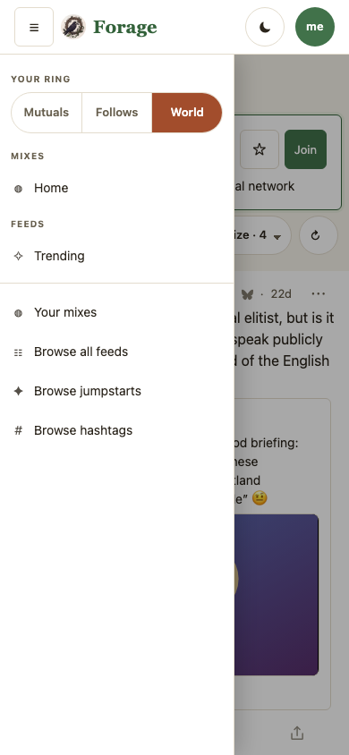
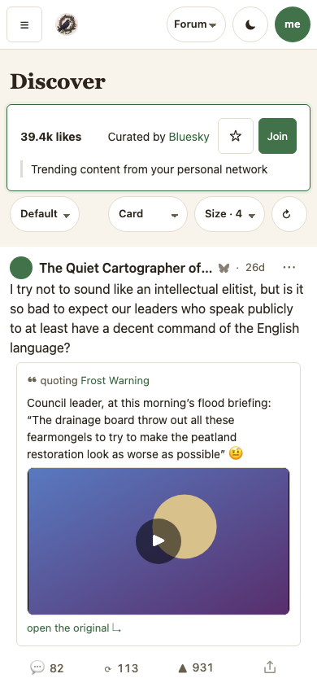

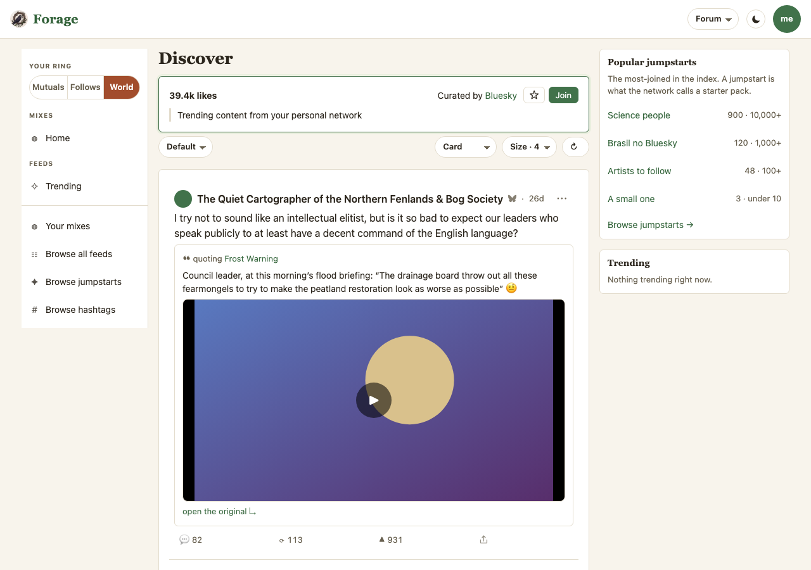
2 · Clip mode — the board's clips, one per screen
Current: the same board as rows — a clip is a stage with a ▶ between rows that are not clips (the frame is scrolled to the board's head, where the key is unknown). Proposed: arriving with Clip chosen lands on the reel: the head card and the sort bar have scrolled under the masthead, the frame is the screen. The bar says 3 clips of 11 loaded posts — the way back is the dropdown in the bar above it. The frame is the row's own media node freed of the row's caps — black bands for the shape — and under it the post's own compact row: byline, words, the reply / repost / like / share row, the ⋯ menu. v4: the frame on screen has mounted its player, muted (the native controls are the sound press; the player here is the journey's double, so the poster is what the capture shows and no playlist left the page). Swipe or scroll snaps to the next clip; one frame is active at a time and the one that left is at rest.

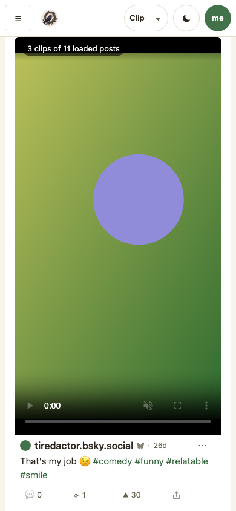
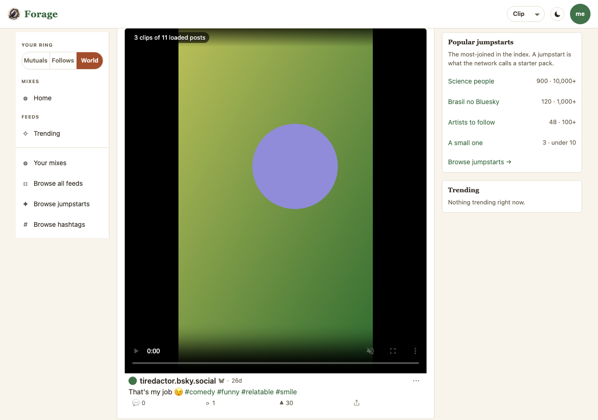
3 · Gram mode — the board's pictures, one per screen
The same reel with the other kind filter: the board's picture posts. A single picture stands on its stage at screen height, contain-fit over its blurred self as on a row; the four-picture post is the carousel the rows already fold it into. The bar says 2 picture posts of 11 loaded posts. Nothing plays; nothing new is fetched.
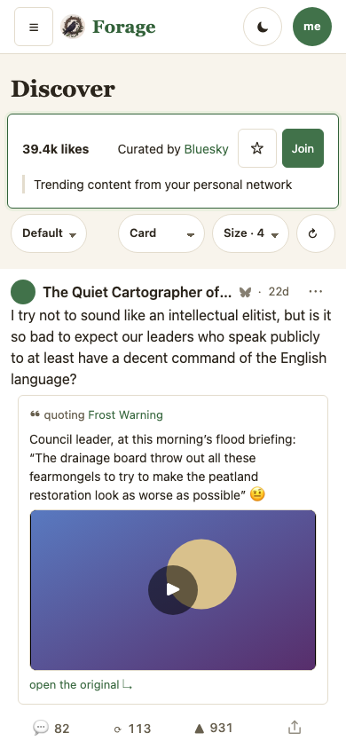
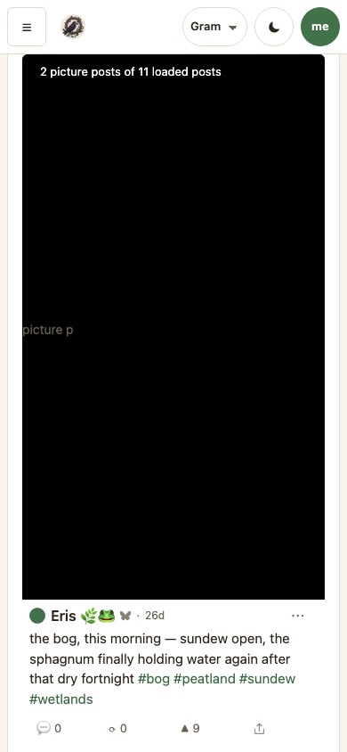

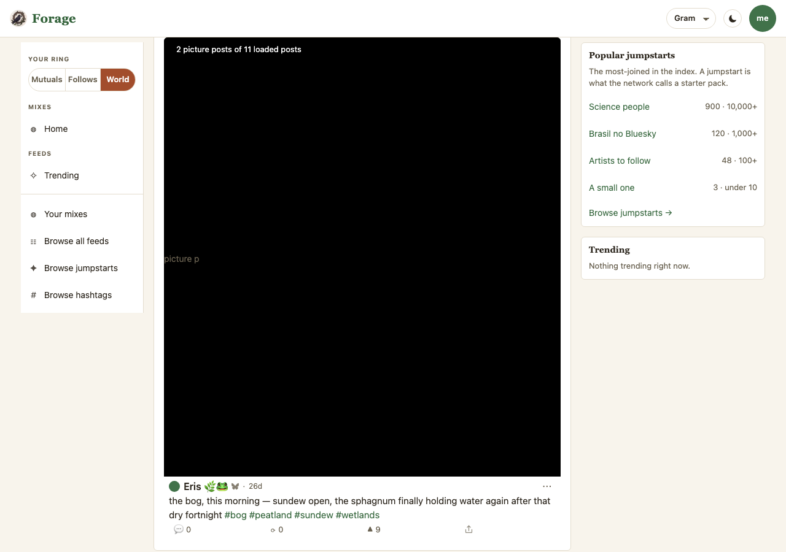
4 · A people-scope reel — Follows, the scope's people asked a wave at a time
The ring at Follows on a board it scopes (the fixture is a feed with the exemption turned off; a mix needs
nothing). Current: the board's rows, which the ring narrows to the follows' posts. Proposed: the reel is the follows themselves —
ten of them and the reader, asked eight at a time with filter=posts_with_video; six answered with clips (one of them
with text the filter let through, dropped), and the frames are dealt one per person per round in the scope's order. The bar says
5 clips from 11 people you follow · 5 loaded posts. Reaching the last frame asks the next three; who answered with a frame is
remembered on this device and asked first next time. The journey holds every one of those claims.

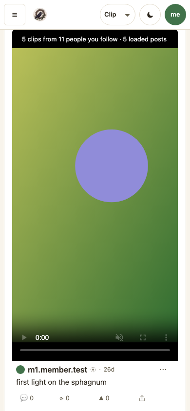

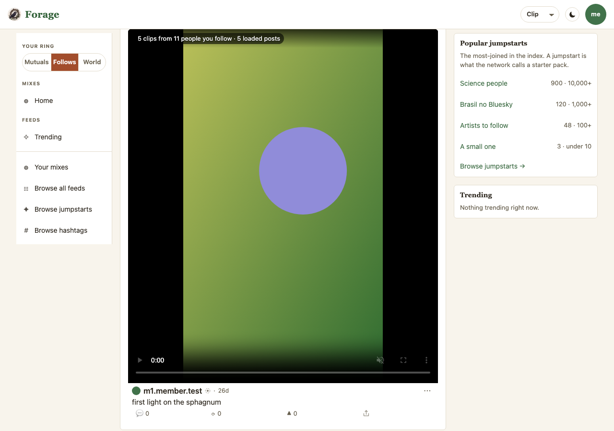
5 · A labeled frame — veiled, never playing
The fourth follow's clip carries a graphic-media label and the reader's settings say warn. On a row
that is a blurred thumbnail. On a frame it is a black screen with the label and press to show; the media is closed behind
it, and when the frame becomes the one on screen no player mounts (the journey holds both). The row under it is the row as
always, its own label chip included. Current: rows.

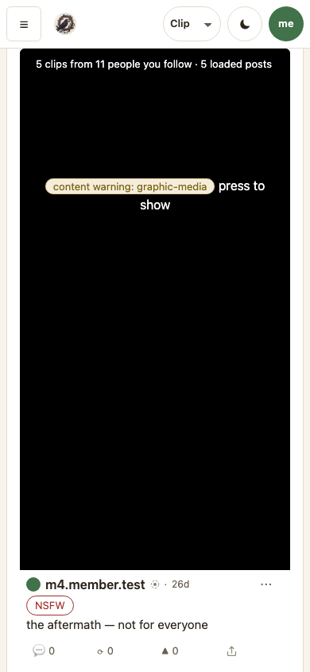
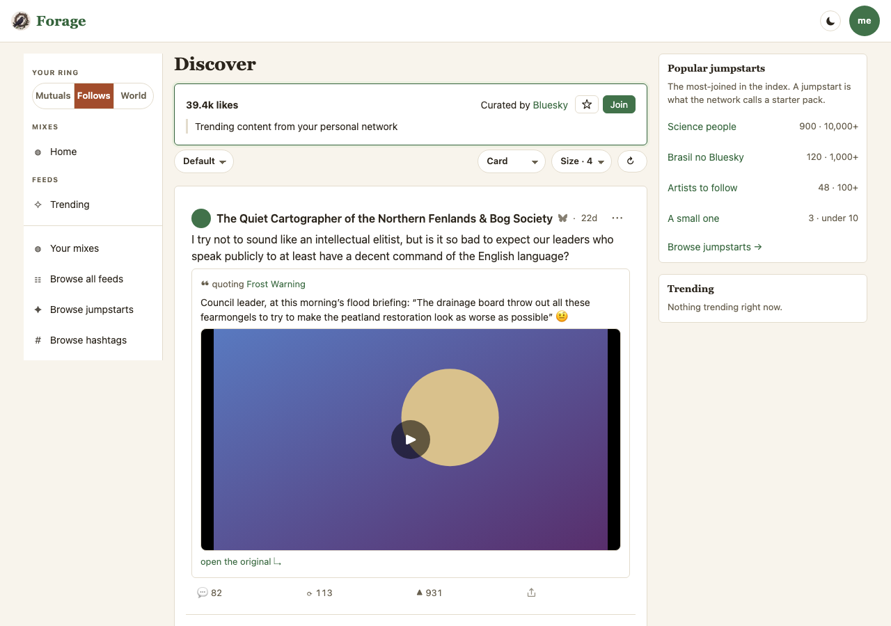
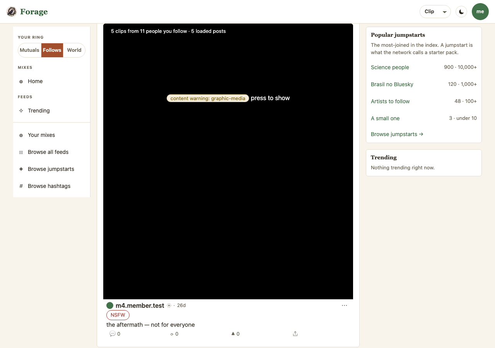
Reference · the board as it ships, with a clip in it
The v1 baseline frames, re-captured at c3a4abe: Home on main scrolled to the quoted clip, the row a clip is today.
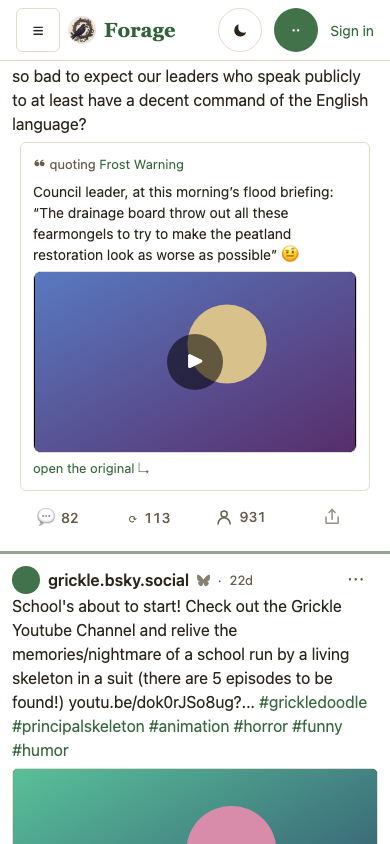
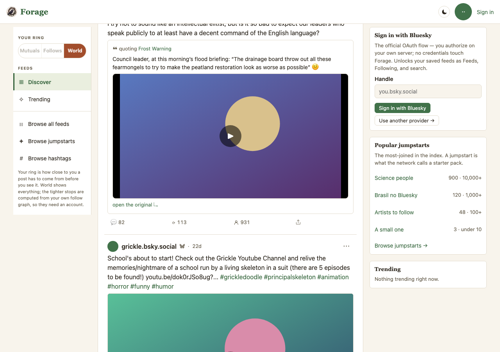
What the frames hold, and what they cannot
- The first capture caught a real defect. The reel began under the head card and the sort bar, so a frame's row sat below the fold on a phone (the whole point of a frame is that the row is with it). Fixed: arriving in a mode lands on the reel (it scrolls itself under the masthead, once); the journey now holds the landing. A drawing would not have shown this — it is why P1 exists.
- Same posts, same policy. The reel is handed the board's ordered, filtered posts — after blocks, mutes, labels, the ring,
the language filter and the window sort — and narrows by
media.kind. A frame is a row by another layout, never a row the forum would not have shown. No new write, no new host, no new lexicon; DL-041 in the ledger records that the memory sandbox has no reel yet because its posts carry no media. - The phones' two findings (2026-09-25), fixed in v6: the count line sits on a dark chip with a text shadow, so it
reads over a bright frame; the active clip loops while on screen. Verified on the Samsung against the branch:
snaps/clips/device/samsung.fol-clip-chip.png, and a 17.4 s clip wrapping 16.3 s → 0.4 s through CDP. - v5's capture caught one more: with the dropdown in it, the phone's top bar wrapped to two rows (113px where the
reel and the drawer assume 61). Fixed — at phone widths the wordmark keeps its emblem and loses its word, the gaps tighten,
the dropdown narrows — measured 61px signed in at 320, 360 and 390, and pinned. A guest at 320 wraps on
mainalready (the Sign in link is the 44px the bar does not have); that is recorded, not hidden. The emblem-only wordmark then measured 28px wide — under the tap floor two journeys hold — so it is a 44px target and the bar's side padding tightens. - v4's capture caught one more: the mounted player painted OVER the count line and the exit (both z-index 3, the later sibling wins). Fixed — the bar sits above a playing frame — and re-captured.
- Not framed: the empty reel (held by the journey); the active frame moving with the scroll and resting (held); the
next wave arriving at the last frame (held); autoplay off (held: no player, no playlist); a GIF card in Gram (unit-held);
reduced motion (snap and autoplay off, otherwise identical); the account-page switch. On the phones, 2026-09-25
[device done 2026-09-25: samsung, pixel]: the snap, the drawer, the dropdown and muted autoplay all held on the Samsung (test account) and the Pixel (the owner's session, read-only) against forage.fyi as deployed — screencaps and their README insnaps/clips/device/, the measurements in the plan's Review Log. Two findings: an ended clip sits at its last frame (no loop, no advance — a decision), and the count line is hard to read over a bright frame (a TODO). - Mapping to code: the pill and the key →
js/view-mode.js, drawn injs/ui/nav.js; the reel →js/ui/reel.js, mounted byrenderBoardinjs/ui/lens-views.js; the people-scope fan-out →js/reel-plan.jsandlens.reel()injs/substrates/lens.js, the registerjs/media-posters.js; autoplay →js/clip-autoplay.jsand the switch injs/ui/views.js; the styles at the end ofcss/app.css; the populatione2e/harness/mock-reel.mjs; the claimse2e/view-modes.workflow.mjs; the capturesscripts/mock-snaps.mjsroutesview-clip view-gram view-nav view-clip-fol view-clip-veil.
Revisions
- v6 — 2026-09-25. The two device findings fixed (the chip, the loop); every Proposed frame re-captured at
d311652; one more phone screencap. - v5 — 2026-09-21. D7 decided on v4: the control is a dropdown in the top bar; the pill under the ring and the reel's
exit are gone. D11: a Default view setting, forum unless chosen; the dropdown's choice lasts the visit. Every Proposed frame re-captured at
1d6ff4f; the top-bar route's Current re-captured too (it no longer opens the drawer). - v4 — 2026-09-21. The rest of the scope built and captured: the people-scope reel (section 4), the veiled frame
(section 5), the active frame's muted player in every clip frame. Eight new frames; every Proposed frame re-captured at
ccfb0be. One capture defect (the bar under the player) fixed and re-captured. - v3 — 2026-09-21. Built. Every Proposed frame is a capture of
claude/video-viewatd9a7901; the sketches are gone. Twelve new frames (three routes, two viewports, Current and Proposed), the v1 reference frames re-captured atc3a4abe. The first capture's below-the-fold row fixed and pinned. - v2 — 2026-09-16. After the owner's reading of v1: the reel is a mode (D6 decided); the mode pill drawn under the ring pill as a sketch; a gram frame; D8–D10 raised.
- v1 — 2026-09-14. Two Current frames captured from the engine; four Proposed frames drawn as sketches.